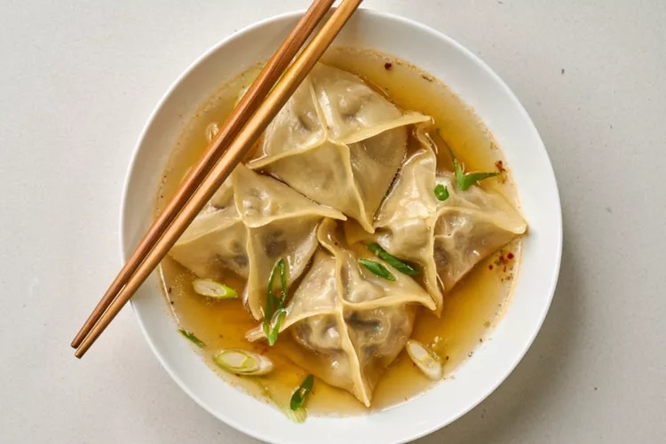

Beef and Mushroom Dumplings in Broth
Get ready to dive into a bowl of comfort with our Beef and Mushroom Dumplings in Broth! These flavor-packed dumplings float on a zesty ginger-based stock, ready to take you on a gastronomical adventure. With a sprinkle of soy sauce and a garnish of fresh green onions, this dish reaches the heights of culinary bliss – and yields nearly 40 dumplings for you to enjoy!
Photo by Candice Walker on allrecipes
Prep Time:
45 mins
Cook Time:
10 mins
Total Time:
55 mins
Servings:
4 servings
Yield:
36 to 40 dumplings
Ingredients
Dumplings:
- 2 tablespoons olive oil
- 8 ounces crimini mushrooms, minced
- 2 garlic cloves, minced
- 1 pound ground beef
- 2 tablespoons grated fresh ginger
- 1 tablespoon low-sodium soy sauce
- 1/2 teaspoon freshly ground black pepper
- 4 green onions, chopped
- 36 wonton wrappers, or more as needed
Broth:
- 2 tablespoons olive oil, or more as needed
- 2 shallots, sliced
- 2 garlic cloves, minced
- 1 tablespoon grated fresh ginger
- 4 cups vegetable broth
- 1/4 cup soy sauce
- 1/4 teaspoon red pepper flakes (optional)
Toppings:
- 2 teaspoons sesame oil, or as needed
- 2 green onions, chopped, or as needed
- 1 teaspoon sesame seeds, or as needed
Directions
- Heat 2 tablespoons olive oil in a large skillet over medium heat. Add mushrooms and sauté until most of the water from the mushrooms has evaporated and mushrooms are slightly golden, 8 to 10 minutes. Add garlic and cook for 1 minute, stirring frequently. Set aside to cool.
- To make the dumpling filling, combine ground beef, ginger, soy sauce, black pepper, green onions, and the cooled mushroom mixture in a large mixing bowl. Stir to combine; set aside.
- To make the broth, heat 2 tablespoons olive oil in a pot over medium heat. Add shallots and cook until softened and beginning to brown, about 3-4 minutes. Add ginger and garlic and cook for 1 minute, stirring frequently. Add the vegetable broth, soy sauce, and red pepper flakes, and bring to a boil, scraping the bottom of the pan as you stir. Reduce heat to low and simmer uncovered for at least 10 minutes while you shape the dumplings.
- To assemble dumplings, place 1 tablespoon filling in the center of each wrapper. Brush the edges of wrapper with water (a spray bottle also works well to spray the edges) and fold to shape. Seal each dumpling fully, leaving no open holes. Repeat until all dumplings are filled.
- Heat 2 tablespoons olive oil in a large skillet over medium heat. Working in batches, add dumplings to the pan in one even layer and cook uncovered until bottoms are golden, 2 to 3 minutes. Reduce heat to medium-low. Carefully add ¼ cup water and immediately cover, letting the dumplings steam until golden brown on the bottom and filling is no longer pink at the center, 5 to 7 minutes. An instant-read thermometer inserted near the center should read at least 160 degrees F (70 degrees C). Use more olive oil If the dumplings are sticking to the pan.
- Transfer cooked dumplings to a plate; keep warm. Repeat to cook remaining dumplings.
- To serve, place several dumplings in a shallow bowl, then pour over with a spoonful of broth